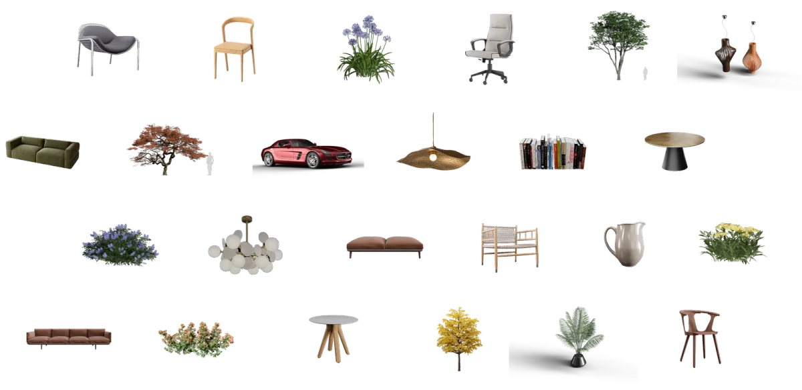
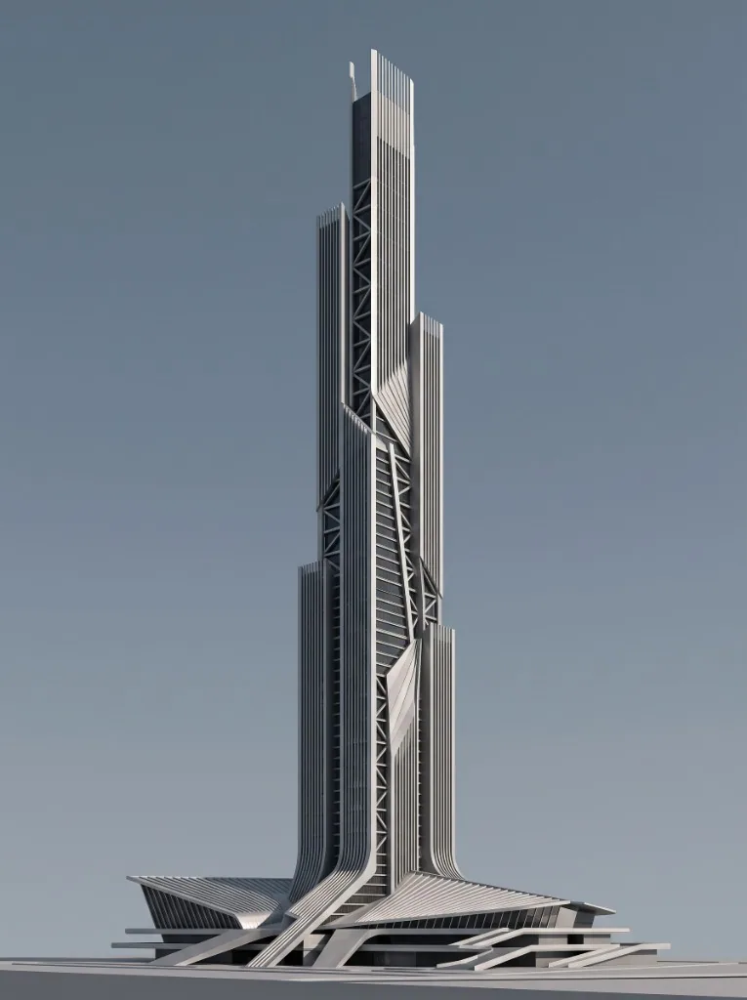
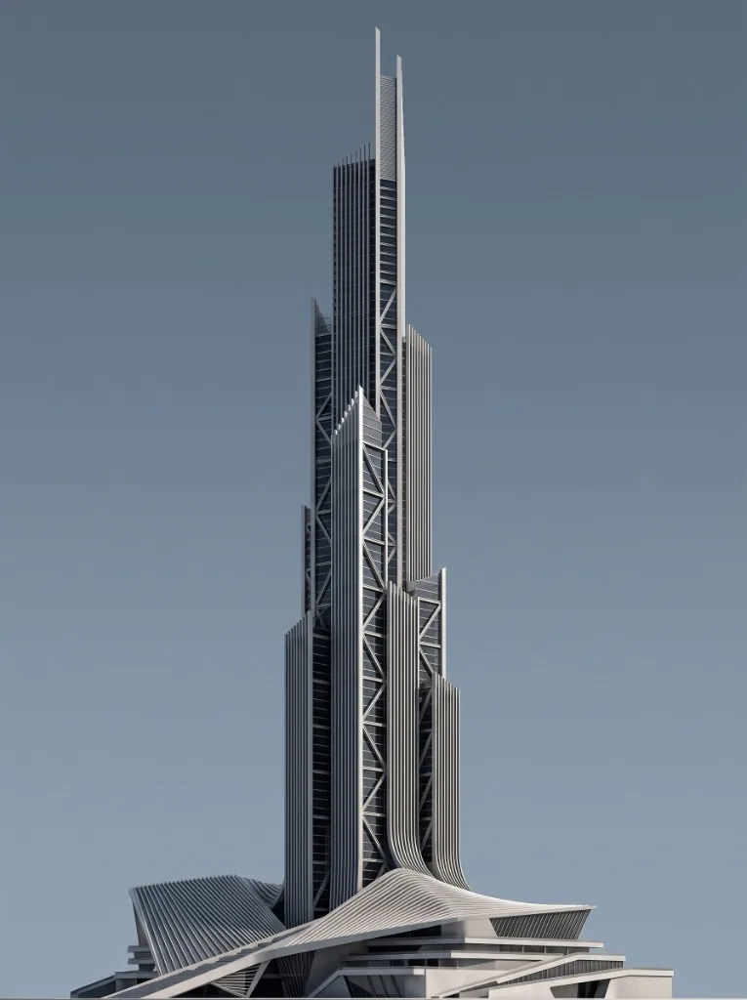
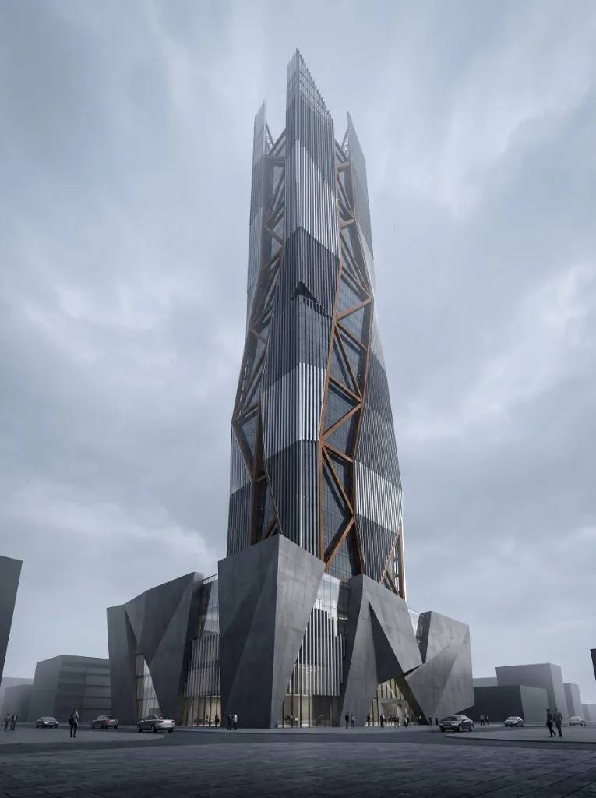
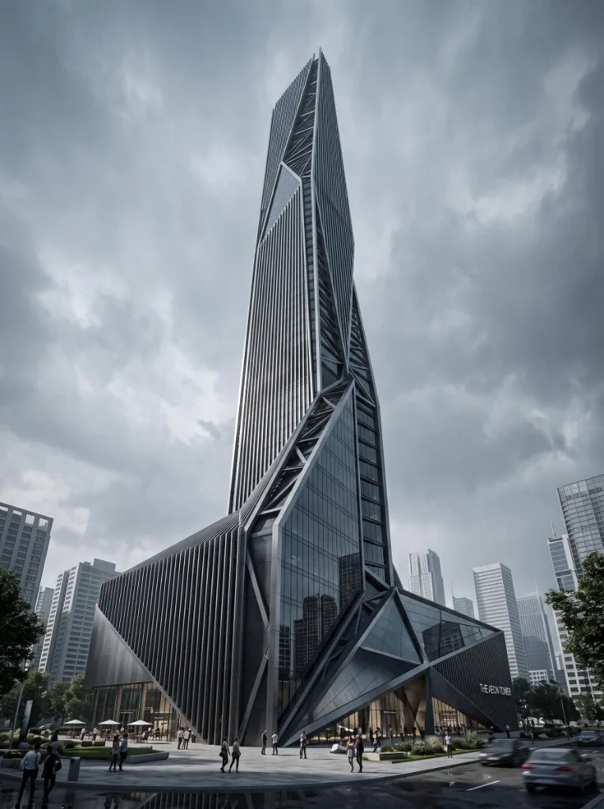
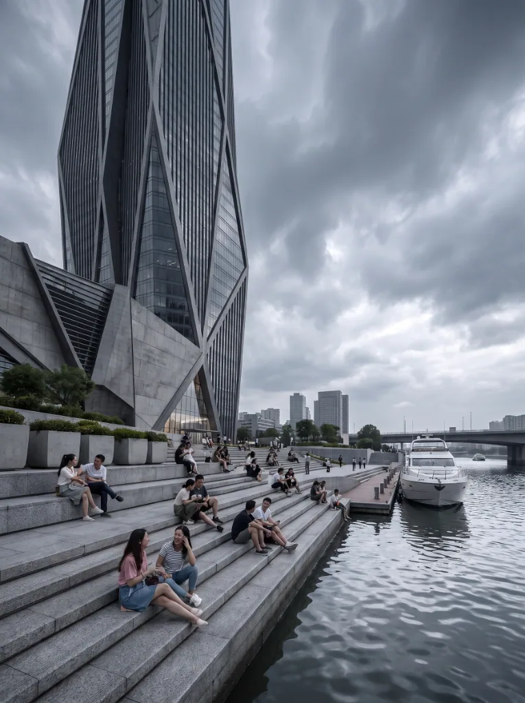

D5 Arco建筑与空间设计的 AI Agent
方向没定时一起推敲，定了就接着做出来；要做实的时候，接上 D5 Render。
- 说出任务一句还没说完整的要求，就可以开始。
- 一起推敲方向没定，先摆几版出来，一起比。
- 接着做出来定了一版，接着出视角，出镜头。
- 去 D5 Render要做实，带进 D5 Render，再把结果带回来。
- 整理成汇报最后整理成一页能讲的汇报。
一件任务，从一句话到一页汇报。
网页动态演示网页动态演示，不是官方宣传片。画面取自 Arco 官方演示项目「超高层地标」；对话、D5 Render 窗口和汇报版式为示意。
Arco 里有与设计对话 · 策划 · 画布 · 文生图 · 图生视频 · 设计汇报 · D5 工作流
D5 Render 把方案做实，Arco 陪你把任务走完。
Arco 是 D5 面向建筑与空间设计的 AI Agent。从第一句描述到最后一页汇报，它一直在场；要推敲体量、做实场景、挑选素材的时候，再把 D5 的工具接进来。
-

和 D5 Lite
在对话里说出想让 Lite 做的操作；Lite 里的图，也可以发到 Arco 的画布上。
-
和 D5 Render
关联正在打开的工程，取场景视口，用布景和灯光；渲染结果再带回画布。
-

和 D5 Works
在对话里用 D5 Works 的工具找素材，做推荐和搭配。
各产品的说明和联动方式，依据 Arco 客户端 0.10.1 的界面文案与 D5 现有页面；实际可用范围以发布版本为准。
跟着一件任务，从头看到尾。
Arco 官方演示项目「超高层地标」：两段描述，七个方向，八个视角，三段镜头。
图片、视频和提示词都取自项目文件。左侧的对话是示意，用来说明每一步在商量什么。
前期探索方向没定，先摆出来看。
滨水地块上要一座超高层地标。先只看形体，按竞赛模型的感觉来。
先出三版，背景留白，只比轮廓和体量。


第一段描述3 版
一座前卫的超高层摩天楼，轮廓极其纤细且不对称，由错动交扣的竖向体量组成，向上收束为狭窄的刀锋状冠部。银灰色金属翼片、密集竖向肋条、深色内凹玻璃、外露斜向结构支撑，以及锐利折面的立面。塔楼向下融入宽阔的雕塑式裙房，配有舒展的肋状屋顶、棱角分明的坡道和层叠露台。极简建筑竞赛可视化，具有精工实体模型般的精确度。接近正面的视角，略微露出侧面，竖线保持笔直，整座塔楼占满画面高度，地平线较低，两侧充分留白。均匀柔和的蓝灰色天空，克制的单色配色，柔和定向日光，细腻金属高光，深沉而受控的阴影，清晰精密的细节。方形构图，无周边城市天际线，无文字，无标志。
形体可以了。换成接近实景的渲染，再看一轮。
这一轮四版，放进了天色、材质和周边的城市。


第二段描述4 版
未来感超高层摩天楼的专业建筑渲染，解构主义构造设计。整体式折板裙房无缝过渡为纤细竖向塔楼。立面采用竖向金属百叶、折面结构钢和深色玻璃幕墙。极简阴天天空，冷灰色氛围，高对比度，干净的几何构图，D5 渲染，ArchDaily 风格，8K。
定方向定了，就这一版往下做。
就这一轮最后那张。往下做。
好。后面的视角和镜头，都拿它当参考图。
- 选定
七个方向里选了哪一个，后面每一张图画的就是哪座楼。
深化楼不变，走近了看。
楼不变。给我滨水、入口、裙房，还有人走在里面的样子。
八个视角。每一张的参考图，都是你选定的那张。

参考图选定的方向
滨河步道
参考图中阶梯式滨河步道的低角度画面。游客坐在近水的花岗岩露台台阶上交谈休憩，附近停靠一艘船。柔和水波，阴天天空，自然抓拍感的建筑生活方式渲染，8K。
要做实的时候，去 D5 Render 走一趟，再回来。
画面在 Arco 里定下来，模型在你的 D5 Render 工程里。把参考图的布光带过去，在真实场景里做实；再把视口和渲染结果取回 Arco，接着整理。
Arco画布
- 为 3D 场景布光
- 3D 场景匹配图片氛围
- 布置 3D 场景
使用当前参考图
当前视口已添加到画布
D5 Render工程窗口示意
在 Arco：街道视角的画面定了。选「为 3D 场景布光」，把这张图当作参考图。
联动示意联动示意，不是实际操作录屏。步骤和界面文案取自 Arco 客户端 0.10.1；D5 Render 窗口为网页绘制，不代表实际渲染结果。需要本机已打开 D5 Render 工程；按该版本客户端的说明，D5 Render 连接目前仅在 Windows 上可用。可用范围以发布版本为准。
表达回到 Arco，做成镜头和汇报。
想要一段镜头。
从哪张图起？首帧不同，出来的镜头也不同。
从选定的那张起，飞过去看。
视频未能加载，显示的是首帧画面。
首帧选定的方向
这段镜头的要求
使用提供的图片作为精确首帧，制作一段 15 秒电影感 FPV 无人机视频。保持塔楼几何、立面结构、棱角分明的裙房，以及周边城市、河流和桥梁。 0–4 秒：平滑加速飞向塔楼，接近右侧立面。钢制翼片与斜向支撑逐渐放大，产生强烈自然视差。 4–9 秒：镜头向下俯仰，沿立面受控俯冲至棱角分明的裙房，始终与建筑保持明确距离。立面细节保持清晰，结构一致。 9–12 秒：平滑向右侧倾转弯，绕过裙房外角，显露滨水步道。在步道上方飞行，避开行人、树木和路灯。 12–15 秒：向外掠过河面，轻柔转回塔楼，最终以富有张力的建筑与滨水广角画面结束。 单个连续流畅的镜头，加速度可信，侧倾克制。冷蓝灰色调，富有戏剧性的阴天日光，真实反射，适度运动模糊。无剪切、瞬移、突变速度、建筑变形，或穿过实体结构的飞行。
再把这些整理成一页汇报。
整理成展示页，图和说明都取自前面的内容。
超高层地标 · 方案汇报版式示意
折板裙房，托起一座纤细的塔
滨水花岗岩阶梯座席结合种植池，逐级下降到水边。
入口折面混凝土雨棚，通向玻璃大堂。
街道树池与街椅之上，是金属百叶的塔身。
附：三段镜头FPV 穿行 15 秒滨水延时 5 秒日转夜 15 秒
从你手上的那件事开始。
选一个最像的起点，得到一段可以直接对 Arco 说的话。
你现在的情况
手上有什么可多选
想先做哪件事
一并带上：
这句话交代了 3 件事
先在左边选一件事，或者直接在上面写。
- 任务书解读解读设计任务书，提取关键指标和约束条件，梳理场地现状，输出多方向概念建议。
- 花园方案协助设计庭院花园方案，从场地分析到概念效果图、平面布局、植物配置逐步推进。
- 设计汇报将项目调研和设计分析整合为可直接演示的汇报网页，包含数据可视化、指标卡片和主视觉。
- 投标文本根据招标评分表按章节编写技术标文本，逐条响应评分项，生成正式方案设计说明。
- 规划自检检查规划方案中容积率、建筑密度、绿地率、日照间距等核心指标是否满足规范要求。

带着这段话，打开 Arco。
演示版本：下载入口尚未接入。
输入框为示意，不会发送任何内容。「刚开始用 AI 做设计」下的任务和说法取自 Arco 客户端 0.10.1；「已经在用 D5 Render」下的说法是为演示写的例句，需要本机已打开 D5 Render 工程，可用范围以发布版本为准。